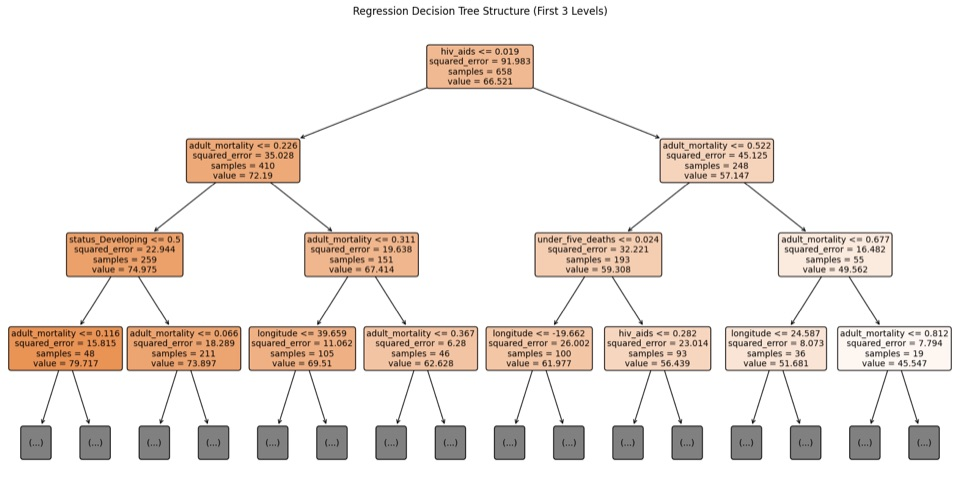
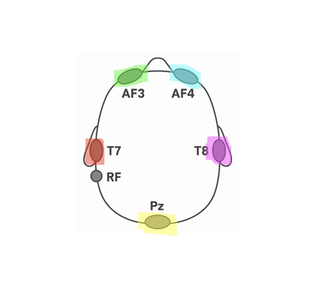
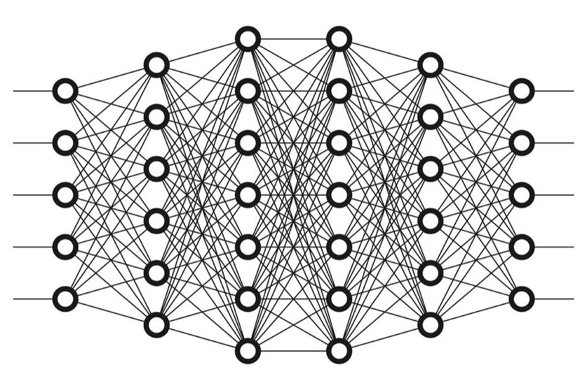
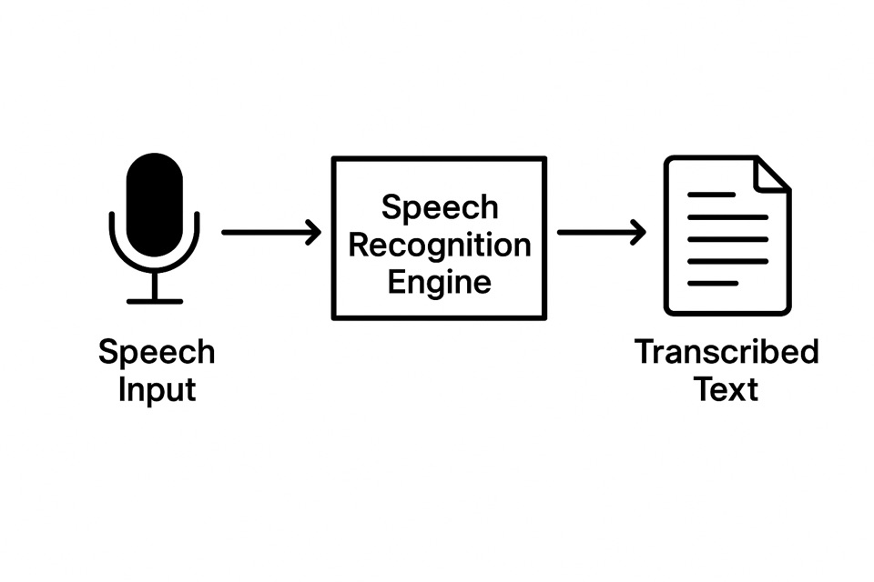
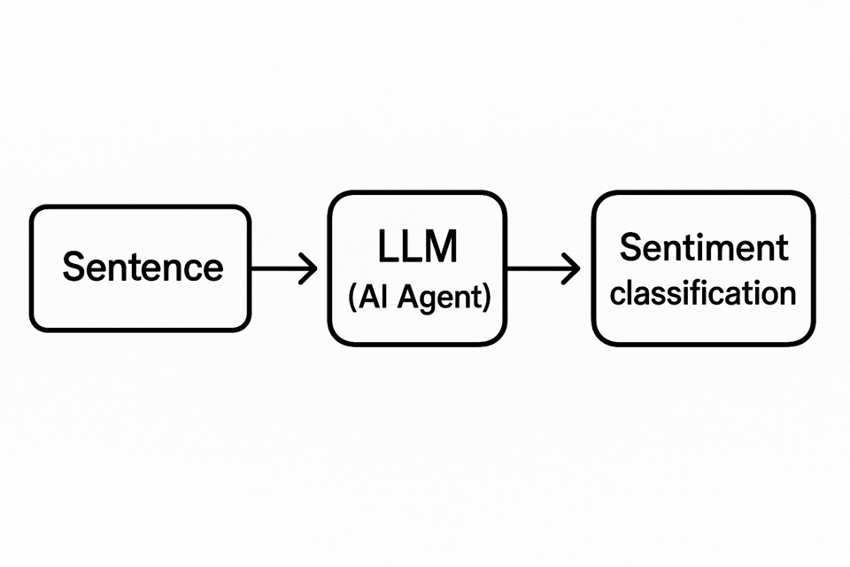

Explainable AI · Human-Centered XAI
Roman Dolgopolyi
I am a PhD student in Computer Science at Northeastern University, advised by Professor Upol Ehsan. My research focuses on Human-Centered AI, making sure that the way people and AI systems interact is both responsible and effective.
Before starting my PhD, I held an R&D position at GRNET on Pharos, the Greek AI Factory under the Hellenic Ministry of Digital Governance, where I trained and fine-tuned foundation models on supercomputers such as MeluXina and ARIS. I also worked as a researcher at the AI Lab and the SWIFT Lab at the American College of Greece, focusing on integrating Explainable AI into medical and wireless communication domains. I earned my bachelor’s degree in Cybersecurity with First-Class Honours from the Open University, UK, and the American College of Greece.
Outside the lab, I enjoy developing new AI applications and have won various AI hackathons, including ones organized by OpenAI and Hugging Face. I welcome connections with researchers, practitioners, and anyone thinking about AI from a human-centered perspective.
Research
Publications
-
Bridging Perception, Language, and Action: A Survey and Bibliometric Analysis of VLM & VLA Systems
EurIPS'25 Workshop on the Science of Benchmarking and Evaluating AI, submitted for presentation 2025
Code
Projects

Machine Learning for Life Expectancy
The project emphasizes ML models' predictive performance and interpretability.
View on GitHub
CNN-Transformer for EEG-based Emotion Recognition
A novel approach to EEG-based emotion recognition that requires only 5 electrodes.
View on GitHub
LLMs — Instruction Finetuning
The project emphasizes ML models' predictive performance and interpretability.
View on GitHub
Speech Recognition
A deep-learning tool that transforms videos into timestamped transcriptions.
View on GitHub
LLMs — Sentiment Analysis
Assesses the accuracy of LLMs on sentiment analysis tasks with zero- and few-shot approaches.
View on GitHubRésumé